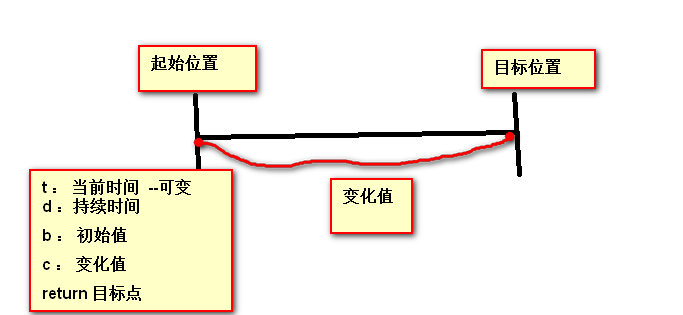

定时器的问题
定时器常识性问题
- 定时器中函数的this始终指向window
setInterval(function(){
console.log(this) //window
},100)
- 如何在定时器正确的输出1，2，3，4，5
//错误的想法
for(var i = 0; i < 5 ;i++){
setInterval(function(){
console.log(i)
},100)
}
//
//把i当参数传递进去
for(var i = 0; i < 5 ;i++){
setInterval((function(arg){
console.log( arg )
})(i),100)
}
//把i当参数传递进去
for(var i = 0; i < 5 ;i++){
(function(i){
setInterval(function(){
console.log( i )
},100)
})(i)
}
- 拿到i 有什么作用来个大栗子
var adiv = document.getElementsByTagName('div');
for (var i =0;i < adiv.length ;i++) {
adiv[i].onclick = function(){
//adiv[i].style.background = "pink"
console.log(i) //如何正确的获取到i
}
}
//做选项卡的时候 ，以前通用的使用添加索引值的玩法
//第一种写法
for (var i =0;i < adiv.length ;i++) {
adiv[i].onclick = (function(arg){
return function(){
console.log(arg)
}
})(i)
}
//第二种写法
for (var i =0;i<adiv.length;i++) {
(function(arg){
adiv[i].onclick = function(){
console.log(arg)
}
})(i)
}
定时器的执行顺序问题 ---第一坑
//执行顺序问题
setInterval(function(){
console.log(2)
},100)
console.log(1)
//当定时器的时间设置为0的时候，执行顺序
setInterval(function(){
console.log(2)
},0) ;
console.log(1)
详情可见：深入理解JavaScript定时机制和定时器注意问题===
定时器有关的案例，都有一个浏览器本身的bug ---第二坑
当页面不可见（最小化）的时候，浏览器为了性能考虑，会定时器减缓，减缓的幅度是未知的
如何解决这个bug呢
window.onfocus = function(){
console.log(1);
timer = setInterval(handle,2000);
};
window.onblur = function(){
console.log(2);
clearInterval(timer);
};
- h5 新增的页面可见性的api
function handleVisibilityChange() {
if (document.hidden) {
//如果页面处于被认为是对用户隐藏状态时返回true，否则返回false。
oCtrl.pause()
} else {
console.log(2)
oCtrl.play()
}
}
document.addEventListener("visibilitychange", handleVisibilityChange, false);
普通版运动函数和时间版运动函数 ===第三坑
当作这种居中放大的例子的时候，普通版运动函数明显出现抖动的情况，匀速运动的时候，抖动比缓冲运动幅度较大
时间版运动函数则，在相同的时间内到达目标点，所以不会出现抖动
时间版运动函数利用的时twenn算法

//当前时间一直在变，怎么获取当前时间
var starttime = (new Date()).getTime()
var changetime = (new Date()).getTime();
t = changetime - starttime //利用时间戳